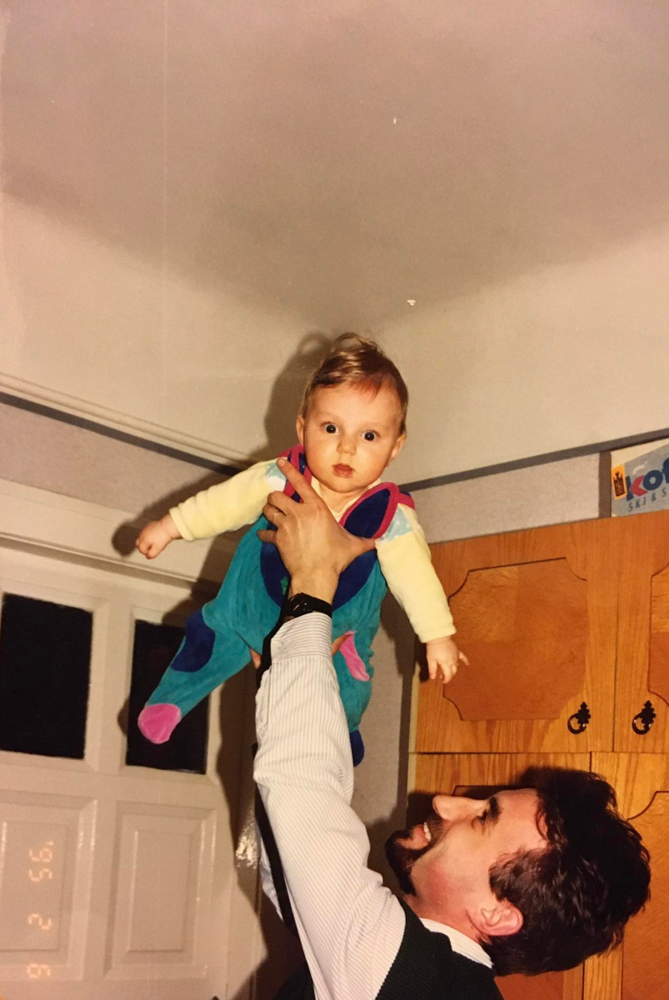

Hello

Családomról
Édesapám erdélyi származású
Édesanyám mentálhigéné szakértő és pszichodráma vezető
TODO: Kép4 testvérem van
TODO: KépNagyapám 85 éves. Tudja, hogy egy webkamerának van illesztőprogramja!

A feleségem meteorológus doktorandusz
- Egy gimnáziumba jártunk
- Vitorlás és Szörf verenybíró
- Ex olimpikon-jelölt
Érdekességek rólam
👀

1 évig cserediák voltam az USA-ban!